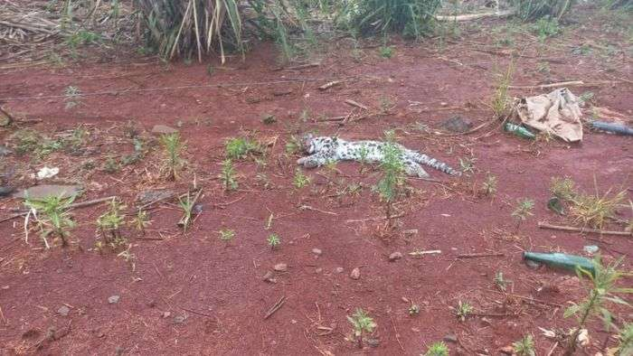

O animal foi encontrado morto na marginal da PR-445, perto da rotatória da avenida Ayrton Senna, zona sul de Londrina, e chamou a atenção. O olhar desatento até poderia confundi-lo com uma jaguatirica ou gato-do-mato, mas na verdade se tratava de um gato-maracajá, felino de pequeno porte que possui hábitos noturnos e solitários. O corpo do bicho foi recolhido para necropsia pela equipe do Hospital Veterinário da Unifil, que identificou que ele foi vítima de atropelamento. É um macho adulto. O macho tem o costume de andar bastante, até para procurar território, fêmeas e alimento. Na região em que foi atropelado temos uma área de mata, plantação de cana. Sempre acaba tendo alimento nesse meio”, explicou a veterinária Daniele Martina A diferença do gato-maracajá para o do mato é que muda a parte das manchas e o maracajá é mais robusto”, destacou, de acordo com o site Bonde News.
